Self-diagnosis System
If the clearance warning ECU assembly detects that an ultrasonic sensor is malfunctioning, a malfunction indication is displayed on the meter circuit plate and navigation receiver assembly*1*2 or radio and display receiver assembly*2*3.
*1: w/ Parking Assist Monitor System
*2: for Navigation Receiver Type
*3: for Radio and Display Type
| Malfunctioning Item | Detection Condition | Warning Message (Multi-information Display) |
Malfunction Indication (Meter Circuit Plate) |
Malfunction Indication (Navigation Receiver Assembly*1*2 or Radio and Display Receiver Assembly*1*3) |
Buzzer Sounding (No. 1 Clearance Warning Buzzer and No. 2 Clearance Warning Buzzer) |
Suspected Area |
|---|---|---|---|---|---|---|
| Frozen indication |
|
Clean Parking Assist Sensor | ○ | ○ | ○ |
|
| Open circuit indication |
|
Parking Assist Malfunction | ○ | ○ | ○ | Check for DTCs |
*1: w/ Parking Assist Monitor System
*2: for Navigation Receiver Type
*3: for Radio and Display Type
Malfunction Indication (Meter Circuit Plate)
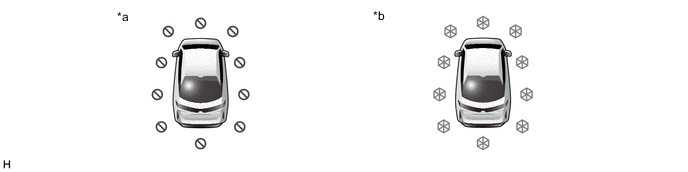
| *a | Open circuit indication | *b | Frozen indication |
Malfunction Indication (Navigation Receiver Assembly*1*2 or Radio and Display Receiver Assembly*1*3)
*1: w/ Parking Assist Monitor System
*2: for Navigation Receiver Type
*3: for Radio and Display Type
| *a | Open circuit indication | *b | Reverse (R) selected |
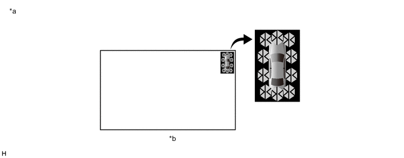
| *a | Frozen indication | *b | Reverse (R) selected |
Buzzer Sounding (No. 1 Clearance Warning Buzzer and No. 2 Clearance Warning Buzzer)
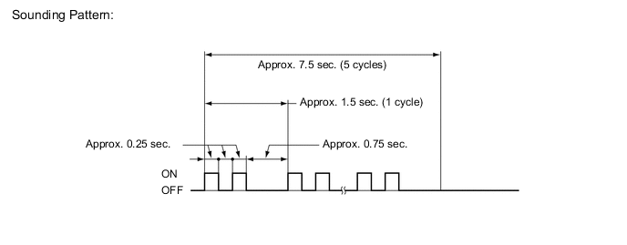
Tech Tips
Buzzer sounding is stopped after approximately 7.5 seconds elapsed.
DETECTION RANGE MEASUREMENT AND DISPLAY INSPECTION
Note
Perform the following measurement and inspection with a shift state other than park (P) selected. Be sure to apply the parking brake and depress the brake pedal firmly to prevent the vehicle from moving.
Turn the power switch on (READY).
Turn the TOYOTA parking assist-sensor system on.
Detection range measurement:
Move the shift state according to the table below.
| Measurement Area | Shift State |
| Front Corner | Other than park (P) |
| Front Center | Other than park (P) or reverse (R) |
| Front Side | Other than park (P) |
| Rear Corner | Reverse (R) |
| Rear Center | |
| Rear Side | Other than park (P) |
Move a 60 mm (2.4 in.) diameter pole near each sensor to measure its detection range. When measuring the longest-range detection of the front center sonar and the rear center sonar, use a wall or equivalent.
Note
These detection ranges are applicable when positioning the 60 mm (2.4 in.) diameter pole parallel or perpendicular to the ground. The detection range varies depending on the measuring method and type of obstacle (such as walls).
Tech Tips
Have an assistant move the pole.
Figure 1. Corner Sonar Detection Range
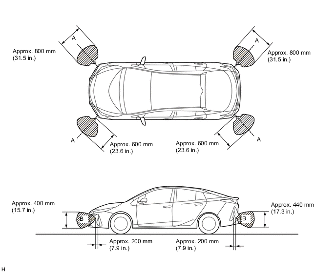
Note
The ultrasonic sensor side view detection range (hatched area labeled (B)) represents the cross section of the top view detection range (A). The hatched area (B) does not represent the entire side view detection range.
Figure 2. Front Center Sonar Detection Range
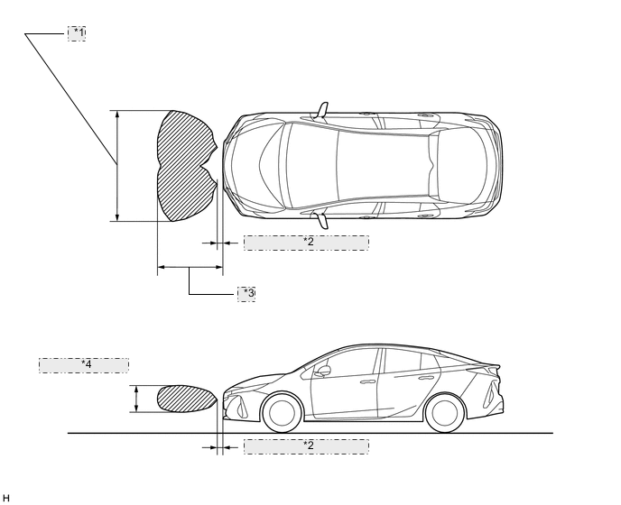
| *1 | Approx. 1760 mm (69.3 in.) |
| *2 | Approx. 200 mm (7.9 in.) |
| *3 | Approx. 1000 mm (39.4 in.) |
| *4 | Approx. 400 mm (15.7 in.) |
Figure 3. Rear Center Sonar Detection Range
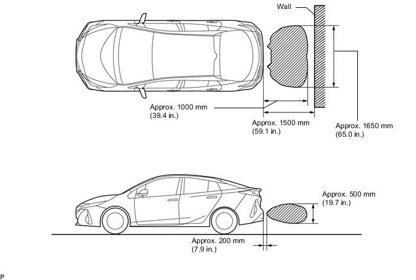
Figure 4. Side Sonar Detection Range
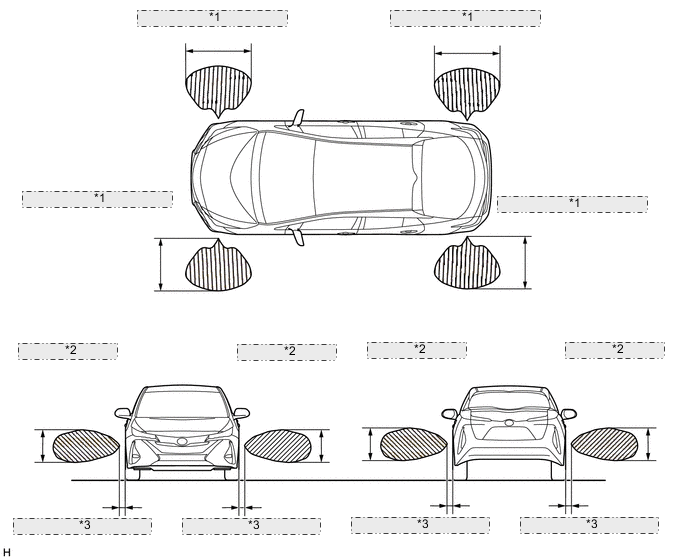
| *1 | Approx. 1000 mm (39.4 in.) |
| *2 | Approx. 500 mm (19.7 in.) |
| *3 | Approx. 200 mm (7.9 in.) |
Front corner sonar display and buzzer operation check
When the ultrasonic sensors (front corner sonar) have detected an obstacle, check the displays and check that the buzzer sounds.
| Power Switch | TOYOTA Parking Assist-sensor System | Shift State | Vehicle Speed |
|---|---|---|---|
| On (Ready) | On | Other than park (P) | Less than approximately 10 km/h (6 mph) if speed is increasing |
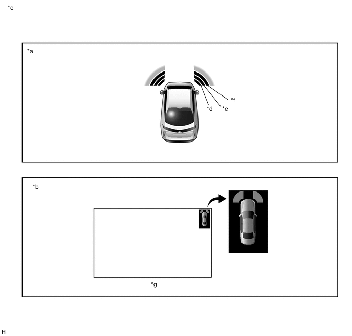
| *a | Multi-information Display | *b | Multi-display (w/ Parking Assist Monitor System) |
| *c | Example (Front Corner Sonar) | *d | Close-range Detection |
| *e | Medium-range Detection | *f | Long-range Detection |
| *g | Reverse (R) selected | - | - |
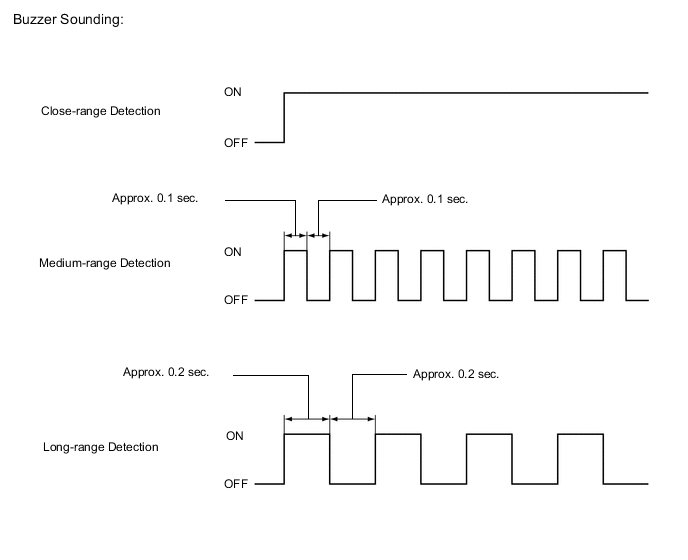
Tech Tips
Ultrasonic waves are used to measure the detection range; however, the detection range may vary depending on the ambient temperature.
Front center sonar display and buzzer operation check
When the ultrasonic sensors (front center sonar) have detected an obstacle, check the display and check that the buzzer sounds.
| Power Switch | TOYOTA Parking Assist-sensor System | Shift State | Vehicle Speed |
|---|---|---|---|
| On (Ready) | On | Other than park (P) or reverse (R) | Less than approximately 10 km/h (6 mph) if speed is increasing |
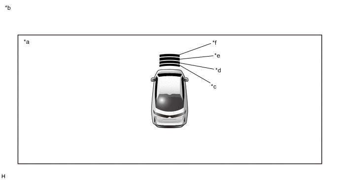
| *a | Multi-information Display | *b | Example (Front Center Sonar) |
| *c | Close-range Detection | *d | Medium-range Detection |
| *e | Long-range Detection | *f | Longest-range Detection |
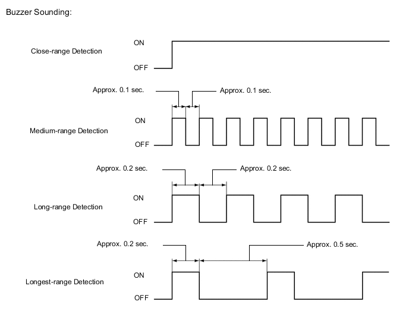
Tech Tips
Ultrasonic waves are used to measure the detection range; however, the detection range may vary depending on the ambient temperature.
Rear corner sonar display and buzzer operation check
When the ultrasonic sensors (rear corner sonar) have detected an obstacle, check the display and check that the buzzer sounds.
| Power Switch | TOYOTA Parking Assist-sensor System | Shift State | Vehicle Speed |
|---|---|---|---|
| On (Ready) | On | Reverse (R) | Less than approximately 10 km/h (6 mph) if speed is increasing |
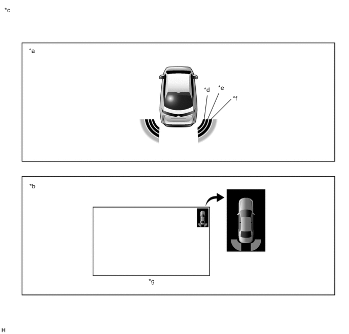
| *a | Multi-information Display | *b | Multi-display (w/ Parking Assist Monitor System) |
| *c | Example (Rear Corner Sonar) | *d | Close-range Detection |
| *e | Medium-range Detection | *f | Long-range Detection |
| *g | Reverse (R) selected | - | - |
Tech Tips
Ultrasonic waves are used to measure the detection range; however, the detection range may vary depending on the ambient temperature.
Rear center sonar display and buzzer operation check
When the ultrasonic sensors (rear center sonar) have detected an obstacle, check the display and check that the buzzer sounds.
| Power Switch | TOYOTA Parking Assist-sensor System | Shift State | Vehicle Speed |
|---|---|---|---|
| On (Ready) | On | Reverse (R) | Less than approximately 10 km/h (6 mph) if speed is increasing |
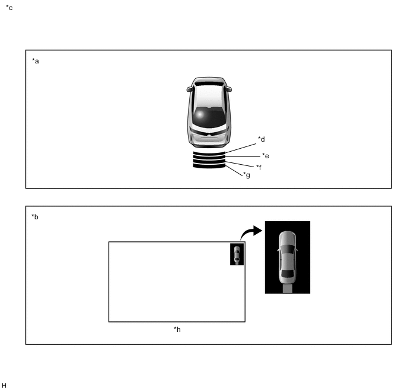
| *a | Multi-information Display | *b | Multi-display (w/ Parking Assist Monitor System) |
| *c | Example (Rear Center Sonar) | *d | Close-range Detection |
| *e | Medium-range Detection | *f | Long-range Detection |
| *g | Longest-range Detection | *h | Reverse (R) selected |
Tech Tips
Ultrasonic waves are used to measure the detection range; however, the detection range may vary depending on the ambient temperature.
Side sonar display and buzzer operation check
When the ultrasonic sensors (side sonar) have detected an obstacle, check the display and check that the buzzer sounds.
| Power Switch | TOYOTA Parking Assist-sensor System | Shift State | Vehicle Speed | Steering angle |
|---|---|---|---|---|
| On (Ready) | On | Other than park (P) | Less than approximately 10 km/h (6 mph) if speed is increasing | Steering wheel turned 90° or more |
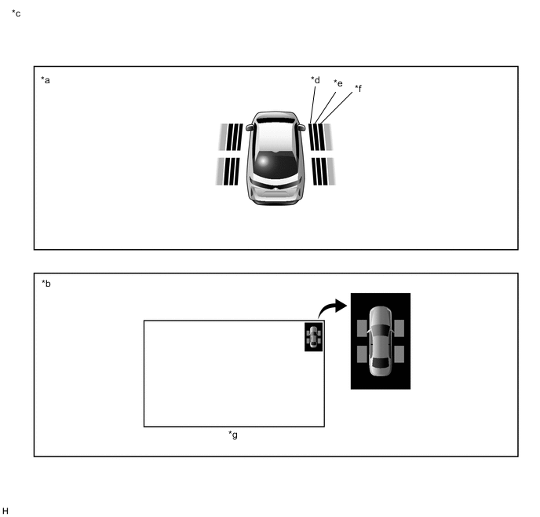
| *a | Multi-information Display | *b | Multi-display (w/ Parking Assist Monitor System) |
| *c | Example (Side Sonar) | *d | Close-range Detection |
| *e | Medium-range Detection | *f | Long-range Detection |
| *g | Reverse (R) selected | - | - |
| Detection Range | During Judgment | Obstacle |
|---|---|---|
| Close-range detection Within approx. 300 +/- 150 mm (11.8 +/- 5.91 in.) |
Buzzer: Sounds continuously Color of bars displayed: Red (illuminated) |
60 mm (2.4 in.) diameter pole |
| Medium-range detection From approx. 300 +/- 150 to 700 +/- 150 mm (11.8 +/- 5.91 to 27.6 +/- 5.91 in.) |
Buzzer: Sounds intermittently (ON: 0.1 sec. / OFF: 0.1 sec.) Color of bars displayed: Yellow (blinking) |
60 mm (2.4 in.) diameter pole |
| Long-range detection From approx. 700 +/- 150 to 1000 +/- 150 mm (27.6 +/- 5.91 to 39.4 +/- 5.91 in.) |
Buzzer: Sounds intermittently (ON: 0.2 sec. / OFF: 0.2 sec.) Color of bars displayed: Yellow (blinking) |
60 mm (2.4 in.) diameter pole |
Tech Tips
Ultrasonic waves are used to measure the detection range; however, the detection range may vary depending on the ambient temperature.
The vehicle must move forward or backward a certain distance in order for the side sonar to determine whether there is an obstruction alongside the vehicle.*
*: For the system description of the side sonar display and buzzer, refer to System Discription.